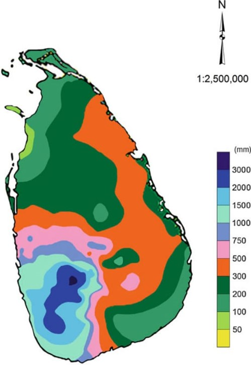
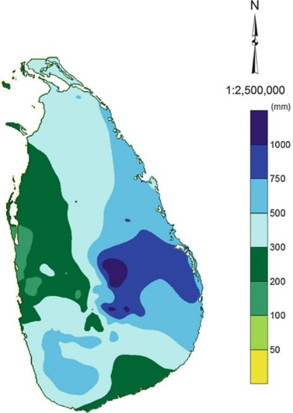
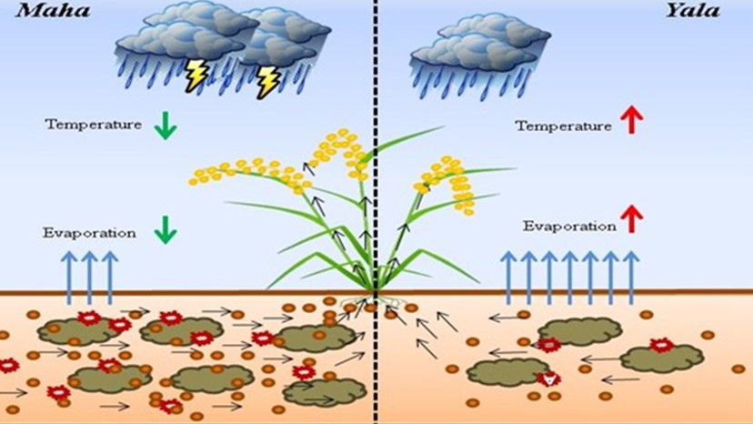

GROUP 05
Rainfall Distribution
Zones & Seasons
1. முதலாவது இடை மொன்குன்
மார்ச் – ஏப்ரல் (March - April)
- நிலப்பரப்பு வேகமாக சூடாகி காற்று மேல்நோக்கி எழுந்து குளிர்ந்த மேகங்களை உருவாக்குகிறது.
- மேகங்கள் பிற்பகல் அல்லது மாலையில் குறுகிய இடியுடன் கூடிய கனமழையைத் தருகின்றன.

2. தென்மேற்கு மொன்குன் (உருவாக்கம்)
மே – செப்டம்பர் (May - Sept)
- தென் அரைக்கோளத்திலிருந்து காற்று இந்தியப் பெருங்கடல் வழியாக வீசுகிறது.
- ஈரப்பதம் உறிஞ்சி மலைக்கு மோதுகிறது, இதனால் கனமழை பெய்கிறது.
- மலைகளை தாண்டும் போது கிழக்கு வறண்ட பகுதிகளில் மழை குறையும்.
3. காலநிலை வலயங்கள்
Wet & Dry Zones
Wet Zone
கொழும்பு, காலி, மாத்தறை, இரத்தினபுரி (2,500 - 5,000 மி.மீ).
Dry Zone
யாழ்ப்பாணம், மன்னார், அனுராதபுரம் (1,000 மி.மீ க்கும் குறைவு).

4. மழைவீழ்ச்சிப் பரம்பல்
Regional Distribution
- அதிக மழை: தென்மேற்குப் பகுதிகள்.
- நடுத்தர மழை: மத்திய மலைநாட்டுப் பகுதிகள் (கண்டி, நுவரெலியா).
- குறைந்த மழை: வடக்கு மற்றும் கிழக்கு மாகாணங்கள்.

5. இரண்டாவது இடை மொன்குன்
அக்டோபர் – நவம்பர் (Oct - Nov)
- வங்காள விரிகுடா மற்றும் தாழ் அழுத்த மண்டலங்கள் மூலம் மழை கிடைக்கிறது.
- நாட்டை நோக்கி சமமான மழைவீழ்ச்சி கிடைக்கிறது.
- முழு நாடும் பாதிப்பு: தென்மேற்கு, மத்திய, வடக்கு, கிழக்கு.

6. இயற்கை அபாயங்கள்
Impact & Hazards
- தீவிர மழை காரணமாக வெள்ளப்பெருக்கு (Flash Floods) ஏற்படலாம்.
- மலைநாட்டின் பகுதிகளில் மண்சரிவுகள் (Landslides) ஏற்பட வாய்ப்புள்ளது.
